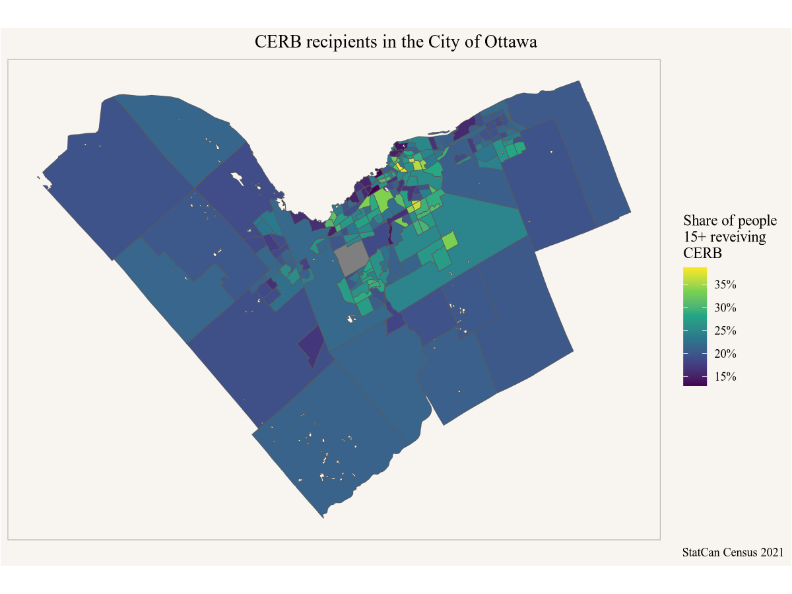
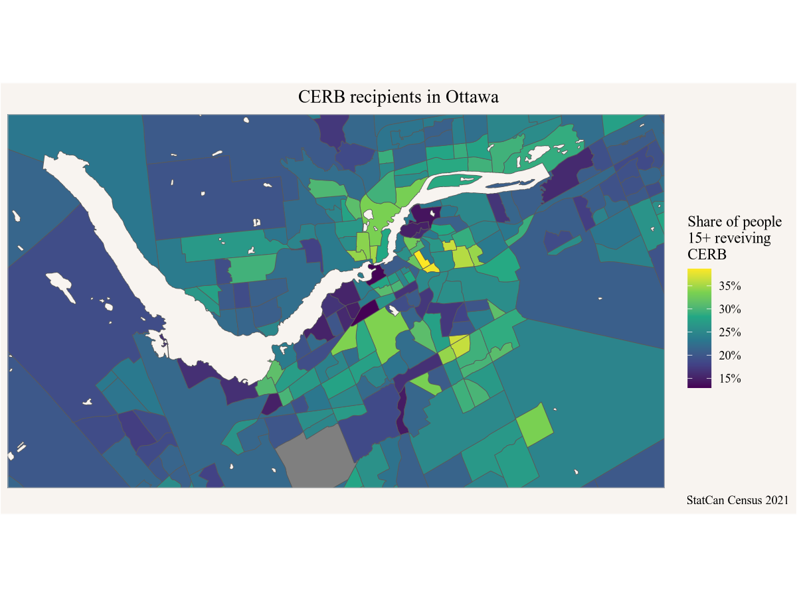

Code
library(cancensus)
ottawa_cerb <- get_census("CA21",regions=list(CSD="3506008"),
vectors=c(cerb="v_CA21_593", base="v_CA21_554"),
level="CT", geo_format="sf")In 2020 Canada introduced the COVID-19 Emergency Recovery Benefit (CERB), a program to support people ring the pandemic.
Where did CERB benefits go?
Standard T1FF taxfiler data has this for large geographies, to understand fine geographic distribution we turn to Census data from the 2021 census, which reports on 2020 income. The census dictionary explains
Canada Emergency Response Benefit (CERB) payments received during the reference period. This benefit was intended to provide financial support to employees and self‑employed Canadians who had lost their job or were working fewer hours due to the COVID‑19 pandemic and the public health measures implemented to minimize the spread of the virus.
Census income data is taken directly from T1 tax returns and linked at the individual person level.
We can use the CensusMapper API tool and search for “COVID-19” in the Variable Selection tab to locate available census variables. Since we are interested in where people lived that received the benefit we select v_CA21_593, the number of recipients, as well as v_CA21_554, the baseline of people 15 years or older who are in principle eligible for this benefit.
We also need to decide which region we want to investigate, let’s take a look at the City of Ottawa. We can select the city in the Region Selection tab and read off the geographic identifier 3506008 for the City of Ottawa in the Overview tab.
Now we have all we need to pull in the data, we just need to decide on the geographic granularity. Let’s use census tracts, a standard geographic region aiming to capture between 2,500 and 7,500 people in metropolitan areas. We also specify that we want the geographies, not just the tabular data.
library(cancensus)
ottawa_cerb <- get_census("CA21",regions=list(CSD="3506008"),
vectors=c(cerb="v_CA21_593", base="v_CA21_554"),
level="CT", geo_format="sf")To understand the geographic distribution we compute the percentage of people 15 years and over receiving CERB. Generally in this book we work in the tidyverse to help with data manipulation and visualization, so we load that library too.
There is not much to do, computing a percentage is a simple division. The mutate verb creates a new column called Share holding the computed ratios.
All that’s left is to visualize the data. To plot geographic data we use ggplot and the geom_sf geometry. We need to tell it how to colour the map, the aesthetic, and we specify to fill each area by the share of CERB recipients.
To make this a little nicer we add labels, remove the coordinate grid and choose nicer colours and reduce the boundary line size.

It is difficult to see the central parts, we might want to zoom in a little. At the same time, it might be useful to add in Gatineau and surrounding municipalities, so maybe we want the data for the entire metro area.
To do this we copy and paste the code from above and chain it into a single pipe, from data acquisition (using the CMA 505 for Ottawa CMA), computing the share, to plotting and cutting the region to the central parts by looking at the grid from the first map.
get_census("CA21",regions=list(CMA="505"),
vectors=c(cerb="v_CA21_593", base="v_CA21_554"),
level="CT", geo_format="sf") |>
mutate(Share=cerb/base) |>
ggplot() +
geom_sf(aes(fill=Share)) +
scale_fill_viridis_c(labels=scales::percent) +
coord_sf(datum=NA, xlim=c(-76,-75.5), ylim=c(45.3,45.5)) +
labs(title="CERB recipients in Ottawa",
fill="Share of people\n15+ reveiving\nCERB",
caption="StatCan Census 2021")
This brings out the central regions much better. We could also try this with finer geographies, setting the level to dissemination areas instead of census tracts. The same code as before works, except changing the level="CT" to level="DA".
get_census("CA21",regions=list(CMA="505"),
vectors=c(cerb="v_CA21_593", base="v_CA21_554"),
level="DA", geo_format="sf") |>
mutate(Share=cerb/base) |>
ggplot() +
geom_sf(aes(fill=Share)) +
scale_fill_viridis_c(labels=scales::percent) +
coord_sf(datum=NA, xlim=c(-76,-75.5), ylim=c(45.3,45.5)) +
labs(title="CERB recipients in Ottawa",
fill="Share of people\n15+ reveiving\nCERB",
caption="StatCan Census 2021")
We notice substantial differences in the share of people receiving CERB benefits, with rural areas generally having lower shares, and central areas being more mixed, varying between under 10% to well over 40% of people 15 years and over receiving CERB. Generally areas with lower incomes have benefited more from CERB.